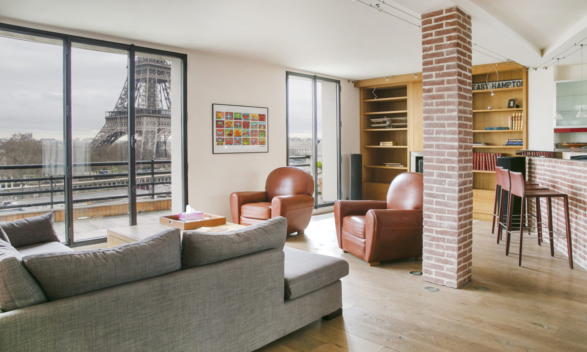

Flats
A high-rise building is defined
by its height differently in various jurisdictions. It may be
only residential, in which case it might also be called a
tower block, or it might include other functions such as
hotel, offices, or shops. There is no clear difference
between a tower block and a skyscraper, although a building
with fifty or more stories is generally considered a
skyscraper.[2] High-rise buildings became possible with
the invention of the elevator (lift) and cheaper,
more abundant building materials.